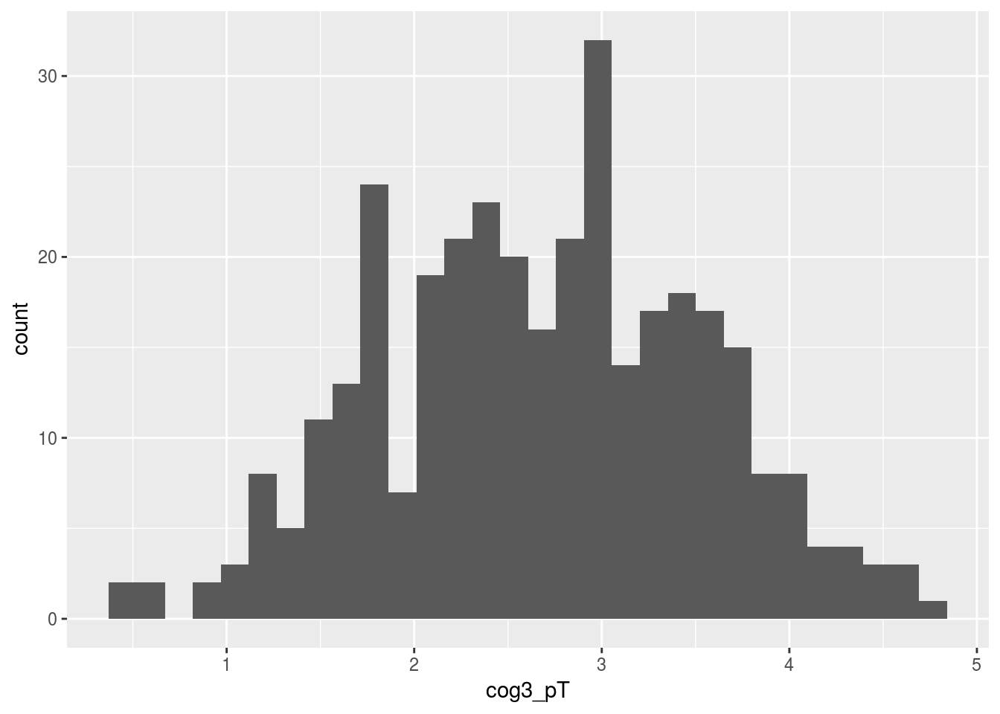
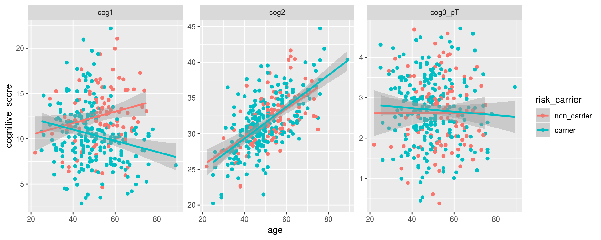

Chapter 4 Stats (Linear Models)
Please download the following files:
We need ‘rms’, ‘ggplot2’, and ‘car’ packages If you haven’t already installed these:
Load the packages
library(tidyverse)
library(dplyr)
library(tidyr)
library(broom)
library(readr)4.0.0.1 p.s. today we are going to use the “pipe” %>%
%>% is the pipe The pipe takes the data from the left of if and feeds it to the function on the next line. Below are two ways for writing the same command.
select(alldata, cog1:cog3)
alldata %>%
select(cog1:cog3)4.1 Set up (Running Intro to R commands)
Note: we’re going to use read_csv() from the readr package instead of base R’s read.csv because it is a little more robust.
messy_demographic <- read_csv("~/Downloads/messy_demographic.csv") # put in the location of the downloaded data file 1
messy_cognitive <- read_csv("~/Downloads/messy_cognitive.csv") # put in the location of the downloaded data file 2
data3 <- read_csv("~/Downloads/messy_genotype.csv")## Parsed with column specification:
## cols(
## subject_ID = col_character(),
## age = col_character(),
## sex = col_integer(),
## ethnicity = col_character(),
## dx = col_character()
## )## Parsed with column specification:
## cols(
## subID = col_character(),
## cog1 = col_character(),
## cog2 = col_character(),
## cog3 = col_character()
## )## Parsed with column specification:
## cols(
## subID = col_character(),
## genotype = col_character()
## )The data should be merged and ready to go from day 1. If not, here’s the code for it: Copied from here
## I'm using require, it's actually pretty much the same thing as "library"
require(dplyr)
require(stringr)
require(readr)
## we know that we need we have a same missing value issues in all three dataframes
## to avoid copying and pasting 3 times let's set them to a function
recode_missing <- function(df) {
df[df==""] <- NA
df[df=="missing"] <- NA
df[df=="9999"] <- NA
df[df==9999] <- NA
return(df)
}
## pipeping messy demographic to the function we made
## then defining the factors inside a call to mutate
## note I use readr::parse_number(), which less error prone version of as.numeric()
clean_demographic <- messy_demographic %>%
recode_missing() %>%
mutate(age = parse_number(age),
ethnicity = factor(ethnicity,
levels=c("Cauc","AA","As","In","Other")),
sex = factor(sex, levels = c(0,1),
labels = c("Male","Female")),
dx = factor(dx, levels=c(0,1),
labels=c("Control","Case")))
## recoding missing values in using out hand made recode_missing function
## then I use dplyr mutate_at to convert all 3 cog vars to a number
clean_cognitive <- messy_cognitive %>%
recode_missing() %>%
mutate_at(vars(cog1:cog3), funs(parse_number(.)))
## recode and set genotype to a factor
clean_genotype <- messy_genotype %>%
recode_missing() %>%
mutate(genotype = factor(genotype,
levels=c(0,1,2),
labels=c("AA","AG","GG")))
## use stringr to make the subject IDs match
## use dplyr's inner_join to put all three together
## use select to remove the extra column and put "subID" as the first column
alldata <- clean_demographic %>%
mutate(subID = str_replace(subject_ID, "SUB_", "subject")) %>%
inner_join(clean_cognitive, by = "subID") %>%
inner_join(clean_genotype, by = "subID") %>%
select(subID, everything(), -subject_ID)
## remove the intermediate data from your workspace
rm(messy_demographic, messy_cognitive, messy_genotype,
clean_genotype, clean_cognitive, clean_demographic)4.2 A very fast stats refresher!!
4.2.1 what stat function do I need??
For today, we are going to focus on what are called “parametric” statistics. We can spend a semester (and many people do) describing the uses of different statistical tests. However today, to pick the “best” statistical test there are two real questions:
- What type of data is my dependant variable (“y”)?
- What type of data is my independant/predictor variable (“x”)?
| Dependant Variable (y) | |||
|---|---|---|---|
| Factor | Numeric | ||
| Independant (x) | Factor | Chi-Squared chisq.test(ftable(y~x)) |
t-testt.test(y~x) OR ANOVA anova(lm(y~x)) |
| Numeric | Logistic Regression glm(y~x,family=binomial()) |
Correlationcor.test(y~x) OR Regression lm(y ~ x) |
|
| Combination (or multiple) | Logistic Regression glm(y~x1 + x2,family=binomial()) |
Multiple Regression lm(y ~ x1 + x2) |
This table is generally works, UNLESS:
- Your data is not normally distributed (we will test for that later…).
- is this is an issue..you will need to enter the land of non-parametric statistics
- Your data is not “independant”, in other words you have a “repeated-measures design”
- you might need a paired t.test or repeated measures ANOVA
- You have more than one dependant variable.
- Then you need to enter the realm of multivariate statistics..
There are tools for all of this in R. But I will not go into them during this tutorial
Most of what we want to do, we can do with the linear model (lm)
4.3 Looking at Cognition 2 vs Age
The linear model function in R (lm), like many stats functions in R, uses formula notation, where you describe you dependant and independant variables, separated by a tilda ~.
Let’s take an example where we want to predict the scores on cognitive scale 2 using our age variable.
In the next chuck we create a linear model fit object. An then call summary on that object.
fit_cog2_age <-lm(cog2 ~ age, data = alldata) # creates lm "fit" object
summary(fit_cog2_age) # prints a summary report of the fit##
## Call:
## lm(formula = cog2 ~ age, data = alldata)
##
## Residuals:
## Min 1Q Median 3Q Max
## -9.8482 -1.9839 -0.0404 1.5766 8.7988
##
## Coefficients:
## Estimate Std. Error t value Pr(>|t|)
## (Intercept) 20.85385 0.72780 28.65 <2e-16 ***
## age 0.21359 0.01405 15.20 <2e-16 ***
## ---
## Signif. codes: 0 '***' 0.001 '**' 0.01 '*' 0.05 '.' 0.1 ' ' 1
##
## Residual standard error: 2.947 on 335 degrees of freedom
## (13 observations deleted due to missingness)
## Multiple R-squared: 0.4083, Adjusted R-squared: 0.4065
## F-statistic: 231.1 on 1 and 335 DF, p-value: < 2.2e-164.4 Using broom to save/organize model fit numbers
The best part about running stats in R, in contrast to running your stats in some other “point and click” interface. I that your statistical results (i.e. you test stats, residuals, p values) can all be saved into objects that you can later format into tables, plot, print directly into your report…This is very powerful.
Statistical result objects can be tough to work with. The broom package extract numbers from statistical fit results into dataframes that are easier to work with.
4.4.1 augment grabs residuals and predicted values
cogbyage_aug <- alldata %>%
do(augment(lm(cog2~age,data = .)))
head(cogbyage_aug)## .rownames cog2 age .fitted .se.fit .resid .hat
## 1 1 28.82050 43 30.03823 0.1922539 -1.21773373 0.004255104
## 2 2 37.46947 47 30.89260 0.1680257 6.57687558 0.003250207
## 3 3 37.72990 69 35.59159 0.3051575 2.13831656 0.010720322
## 4 4 31.66686 51 31.74696 0.1606849 -0.08009890 0.002972417
## 5 5 31.41426 52 31.96055 0.1618742 -0.54629124 0.003016580
## 6 6 36.05572 71 36.01877 0.3293842 0.03695909 0.012490085
## .sigma .cooksd .std.resid
## 1 2.950925 3.663098e-04 -0.41405515
## 2 2.929588 8.145312e-03 2.23514884
## 3 2.949335 2.882992e-03 0.72944467
## 4 2.951677 1.104278e-06 -0.02721779
## 5 2.951528 5.213355e-05 -0.18563513
## 6 2.951679 1.007059e-06 0.012619164.4.2 tidy grabs to middle table (beta’s and t-stats)
cogbyage_tidy <- alldata %>%
do(tidy(lm(cog2~age,data = .)))
cogbyage_tidy## term estimate std.error statistic p.value
## 1 (Intercept) 20.8538467 0.72779789 28.65335 4.088251e-92
## 2 age 0.2135904 0.01404897 15.20328 4.592760e-404.4.3 glance grabs to full model stats
cogbyage_glance <- alldata %>%
do(glance(lm(cog2~age,data = .)))
cogbyage_glance## r.squared adj.r.squared sigma statistic p.value df logLik
## 1 0.4082732 0.4065069 2.947271 231.1397 4.59276e-40 2 -841.4358
## AIC BIC deviance df.residual
## 1 1688.872 1700.332 2909.947 3354.5 Example: printing our formatted t
4.5.1 now that things are nicely organized we can built tables for our publications, compare across models, and print results to our report
my_t_stat <- cogbyage_tidy %>%
dplyr::filter(term == "age") %>%
select(statistic) %>%
round(.,2) ## round to 2 decimal places
print(my_t_stat)## statistic
## 1 15.24.5.2 Printing a result to our report
The following line: We observe a significant relationship between age adn cognitive scale 2 (t = 15.2, p = 4.592759910^{-40})
was written in markdown as:
We observe a significant relationship between age adn cognitive scale 2 (t = 15.2, p = 4.5927599\times 10^{-40})4.6 plotting distributions
4.6.1 Using ggplot to plot a histogram of cognition score 1
ggplot(alldata, aes(x=cog1)) + geom_histogram()## `stat_bin()` using `bins = 30`. Pick better value with `binwidth`.## Warning: Removed 5 rows containing non-finite values (stat_bin).
4.6.2 Using a combination of “gather” and ggplot to plot all three scores in one plot
alldata %>%
gather(cognitive_scale, cognitive_score,
cog1:cog3) %>%
ggplot(aes(x = cognitive_score)) +
geom_histogram() +
facet_wrap(~cognitive_scale, scales = "free")## `stat_bin()` using `bins = 30`. Pick better value with `binwidth`.## Warning: Removed 19 rows containing non-finite values (stat_bin).
4.7 Transforming variables to “normal”
From the histogram above.. It looks like cog3 is not normally distributed. This is a problem because it violates “the assumption of normally”, and therefore parametric tests (i.e. the linear model) should not be run in this case.
One solution to this problem is to transform this variable into normally distributed variables, and then do the stats on those.
Let’s use dplyr’s mutate function to calculate a log (i.e. log10) and square-root transform (sqrt).
alldata <- alldata %>%
mutate(cog3_log = log(cog3),
cog3_sqrt = sqrt(cog3))Let’s plot histograms of these new values
alldata %>%
gather(cognitive_scale, cognitive_score,
cog3_log, cog3_sqrt) %>%
ggplot(aes(x = cognitive_score)) +
geom_histogram() +
facet_wrap(~cognitive_scale, scales = "free")## `stat_bin()` using `bins = 30`. Pick better value with `binwidth`.## Warning: Removed 18 rows containing non-finite values (stat_bin).
4.8 Using “power transform” from the car library
The people behind the car library decided to use their computer’s to find the perfect transform!
The function powerTransform magically finds the perfect transform!
library(car)## Loading required package: carData##
## Attaching package: 'car'## The following object is masked from 'package:dplyr':
##
## recode## The following object is masked from 'package:purrr':
##
## some# calculate the best exponent using powerTransform:
pT <- powerTransform(alldata$cog3)
# apply the power transform and save the result to a new variable
alldata$cog3_powerT <- alldata$cog3^pT$lambda ## note ^ is exponent in rUsing powerTransform is a little tricky (it requires two steps). When things get tricky in R, it’s nice to wrap what you want to do inside a function. That way, you can call the function instead of remembering all the steps next time you want to do something!
## run the power transform, return the transformed variable
## where x is a vector of values
get_pT <- function(x) {
pT <- x^powerTransform(x)$lambda
return(pT)
}
alldata <- alldata %>%
mutate(cog3_pT = get_pT(cog3))
ggplot(alldata, aes(x=cog3_pT)) + geom_histogram()## `stat_bin()` using `bins = 30`. Pick better value with `binwidth`.## Warning: Removed 9 rows containing non-finite values (stat_bin).
4.9 Recodeding our genotype into risk-allele carriers vs non-carriers
summary(alldata$genotype)## AA AG GG NA's
## 103 145 94 8library(forcats)
alldata <- alldata %>%
mutate(risk_carrier = fct_recode(genotype,
carrier = "GG",
carrier = "AG",
non_carrier = "AA"))4.10 Investigating Interactions
4.10.1 fitting our data with an age by risk-carrier interaction
The concept of statistical interaction goes by many names and has many definitions. Simply this is the concept that the effect of one variable changes depending on the value of another variable.
Interaction is indicated in R formula syntax with a “:” or *, depending on if you want to automatically include the main effects of your interacting variables or not. As a general rule, always use *.
fit2 <- lm(cog1 ~ age*risk_carrier, data = alldata)
summary(fit2)##
## Call:
## lm(formula = cog1 ~ age * risk_carrier, data = alldata)
##
## Residuals:
## Min 1Q Median 3Q Max
## -7.9601 -1.9774 -0.0874 1.6888 12.2729
##
## Coefficients:
## Estimate Std. Error t value Pr(>|t|)
## (Intercept) 9.18323 1.61921 5.671 3.12e-08 ***
## age 0.06365 0.02967 2.145 0.032678 *
## risk_carriercarrier 4.31736 1.85584 2.326 0.020611 *
## age:risk_carriercarrier -0.12545 0.03468 -3.617 0.000345 ***
## ---
## Signif. codes: 0 '***' 0.001 '**' 0.01 '*' 0.05 '.' 0.1 ' ' 1
##
## Residual standard error: 3.164 on 326 degrees of freedom
## (20 observations deleted due to missingness)
## Multiple R-squared: 0.1272, Adjusted R-squared: 0.1191
## F-statistic: 15.83 on 3 and 326 DF, p-value: 1.234e-09alldata %>%
drop_na(risk_carrier) %>%
ggplot(aes(x = age, y = cog1, color = risk_carrier)) +
geom_point() +
geom_smooth(method = "lm")## Warning: Removed 12 rows containing non-finite values (stat_smooth).## Warning: Removed 12 rows containing missing values (geom_point).
4.10.2 Plotting all three cognitve variables at once!
alldata %>%
gather(cognitive_scale, cognitive_score,
cog1, cog2, cog3_pT) %>%
drop_na(risk_carrier) %>%
ggplot(aes(y = cognitive_score, x = age, color = risk_carrier)) +
geom_point() +
geom_smooth(method = "lm") +
facet_wrap(~cognitive_scale, scales = "free")## Warning: Removed 40 rows containing non-finite values (stat_smooth).## Warning: Removed 40 rows containing missing values (geom_point).
4.10.3 Running our linear model on all three cognitive variables at once!
lm_results <- alldata %>%
gather(cognitive_scale, cognitive_score,
cog1, cog2, cog3_pT) %>%
drop_na(risk_carrier) %>%
group_by(cognitive_scale) %>%
do(tidy(lm(cognitive_score ~ age*risk_carrier, data = .)))
library(knitr)
kable(lm_results %>%
select(cognitive_scale, term, statistic, p.value) %>%
arrange(p.value))| cognitive_scale | term | statistic | p.value |
|---|---|---|---|
| cog2 | (Intercept) | 14.1811015 | 0.0000000 |
| cog2 | age | 7.1325824 | 0.0000000 |
| cog3_pT | (Intercept) | 5.9003102 | 0.0000000 |
| cog1 | (Intercept) | 5.6714248 | 0.0000000 |
| cog1 | age:risk_carriercarrier | -3.6168948 | 0.0003454 |
| cog1 | risk_carriercarrier | 2.3263728 | 0.0206113 |
| cog1 | age | 2.1451691 | 0.0326778 |
| cog2 | age:risk_carriercarrier | 0.7207797 | 0.4715616 |
| cog2 | risk_carriercarrier | -0.6541716 | 0.5134625 |
| cog3_pT | risk_carriercarrier | 0.5955776 | 0.5518758 |
| cog3_pT | age:risk_carriercarrier | -0.4754718 | 0.6347731 |
| cog3_pT | age | 0.0187474 | 0.9850542 |
4.11 use p.adjust to correct for multiple comparisons
age_effects <- lm_results %>%
dplyr::filter(term == "age")
age_effects$p.FDR <- p.adjust(age_effects$p.value, method = "fdr")
kable(age_effects)| cognitive_scale | term | estimate | std.error | statistic | p.value | p.FDR |
|---|---|---|---|---|---|---|
| cog1 | age | 0.0636475 | 0.0296701 | 2.1451691 | 0.0326778 | 0.0490167 |
| cog2 | age | 0.1986365 | 0.0278492 | 7.1325824 | 0.0000000 | 0.0000000 |
| cog3_pT | age | 0.0001522 | 0.0081193 | 0.0187474 | 0.9850542 | 0.9850542 |
4.12 BONUS SECTION: using rms to get more details
When you want more detailed info out of your models. The rms library can be very useful.
4.12.0.1 total_behaviour_score ~ age
Calculate a composite variable by combining multiple variables Note: new variables can be made easily (using dplyr’s mutate verb)
alldata$totalcog <- (alldata$cog1 + alldata$cog3) / alldata$cog2Simple linear regression (two ways: base package and rms)
library(rms)## Loading required package: Hmisc## Loading required package: lattice## Loading required package: survival## Loading required package: Formula##
## Attaching package: 'Hmisc'## The following objects are masked from 'package:dplyr':
##
## src, summarize## The following objects are masked from 'package:base':
##
## format.pval, units## Loading required package: SparseM## Loading required package: methods##
## Attaching package: 'SparseM'## The following object is masked from 'package:base':
##
## backsolve##
## Attaching package: 'rms'## The following objects are masked from 'package:car':
##
## Predict, viflm.base <- lm(data=alldata, totalcog ~ age)
lm.rms <- ols(data=alldata, totalcog ~ age)Let’s compare the output’s
lm.base##
## Call:
## lm(formula = totalcog ~ age, data = alldata)
##
## Coefficients:
## (Intercept) age
## 1.78587 -0.01219summary(lm.base)##
## Call:
## lm(formula = totalcog ~ age, data = alldata)
##
## Residuals:
## Min 1Q Median 3Q Max
## -1.0529 -0.5054 -0.1940 0.4352 2.3720
##
## Coefficients:
## Estimate Std. Error t value Pr(>|t|)
## (Intercept) 1.785875 0.172793 10.335 < 2e-16 ***
## age -0.012192 0.003346 -3.644 0.000313 ***
## ---
## Signif. codes: 0 '***' 0.001 '**' 0.01 '*' 0.05 '.' 0.1 ' ' 1
##
## Residual standard error: 0.6966 on 322 degrees of freedom
## (26 observations deleted due to missingness)
## Multiple R-squared: 0.03961, Adjusted R-squared: 0.03663
## F-statistic: 13.28 on 1 and 322 DF, p-value: 0.0003125anova(lm.base)## Analysis of Variance Table
##
## Response: totalcog
## Df Sum Sq Mean Sq F value Pr(>F)
## age 1 6.445 6.4446 13.28 0.0003125 ***
## Residuals 322 156.259 0.4853
## ---
## Signif. codes: 0 '***' 0.001 '**' 0.01 '*' 0.05 '.' 0.1 ' ' 1Note: to make the most out of rms package functionality, we need to store summary stats using the datadist() function. That way, when we call summary() on an ols() object (we just made one called “lm.rms”) it will give us useful info.
dd.alldata <- datadist(alldata)
options(datadist="dd.alldata")
lm.rms## Frequencies of Missing Values Due to Each Variable
## totalcog age
## 18 8
##
## Linear Regression Model
##
## ols(formula = totalcog ~ age, data = alldata)
##
##
## Model Likelihood Discrimination
## Ratio Test Indexes
## Obs 324 LR chi2 13.09 R2 0.040
## sigma0.6966 d.f. 1 R2 adj 0.037
## d.f. 322 Pr(> chi2) 0.0003 g 0.160
##
## Residuals
##
## Min 1Q Median 3Q Max
## -1.0529 -0.5054 -0.1940 0.4352 2.3720
##
##
## Coef S.E. t Pr(>|t|)
## Intercept 1.7859 0.1728 10.34 <0.0001
## age -0.0122 0.0033 -3.64 0.0003
## summary(lm.rms)## Effects Response : totalcog
##
## Factor Low High Diff. Effect S.E. Lower 0.95 Upper 0.95
## age 43 58 15 -0.18288 0.050183 -0.28161 -0.084151anova(lm.rms)## Analysis of Variance Response: totalcog
##
## Factor d.f. Partial SS MS F P
## age 1 6.444638 6.4446382 13.28 3e-04
## REGRESSION 1 6.444638 6.4446382 13.28 3e-04
## ERROR 322 156.258677 0.4852754Visualize predicted results using rms
plot(Predict(lm.rms))
4.13 ols gets more powerful as the model get’s more complicated
This is were we start to add covariates and do multiple regression
lm3 <- ols(data=alldata, cog1 ~ age*risk_carrier + sex )
lm3## Frequencies of Missing Values Due to Each Variable
## cog1 age risk_carrier sex
## 5 8 8 4
##
## Linear Regression Model
##
## ols(formula = cog1 ~ age * risk_carrier + sex, data = alldata)
##
##
## Model Likelihood Discrimination
## Ratio Test Indexes
## Obs 326 LR chi2 49.39 R2 0.141
## sigma3.1587 d.f. 4 R2 adj 0.130
## d.f. 321 Pr(> chi2) 0.0000 g 1.432
##
## Residuals
##
## Min 1Q Median 3Q Max
## -7.61165 -2.06275 -0.03454 1.86219 11.69825
##
##
## Coef S.E. t Pr(>|t|)
## Intercept 9.7644 1.6478 5.93 <0.0001
## age 0.0622 0.0299 2.08 0.0386
## risk_carrier=carrier 4.3775 1.8678 2.34 0.0197
## sex=Female -0.8926 0.3636 -2.45 0.0146
## age * risk_carrier=carrier -0.1251 0.0349 -3.59 0.0004
## anova(lm3)## Analysis of Variance Response: cog1
##
## Factor d.f. Partial SS
## age (Factor+Higher Order Factors) 2 165.95975
## All Interactions 1 128.34287
## risk_carrier (Factor+Higher Order Factors) 2 432.58671
## All Interactions 1 128.34287
## sex 1 60.13082
## age * risk_carrier (Factor+Higher Order Factors) 1 128.34287
## REGRESSION 4 523.84580
## ERROR 321 3202.66179
## MS F P
## 82.97987 8.32 0.0003
## 128.34287 12.86 0.0004
## 216.29335 21.68 <.0001
## 128.34287 12.86 0.0004
## 60.13082 6.03 0.0146
## 128.34287 12.86 0.0004
## 130.96145 13.13 <.0001
## 9.97714summary(lm3)## Effects Response : cog1
##
## Factor Low High Diff. Effect S.E.
## age 43 58 15 -0.94428 0.26908
## risk_carrier - non_carrier:carrier 2 1 NA 1.75290 0.41015
## sex - Male:Female 2 1 NA 0.89259 0.36358
## Lower 0.95 Upper 0.95
## -1.47370 -0.41489
## 0.94596 2.55980
## 0.17728 1.60790
##
## Adjusted to: age=49 risk_carrier=carrier4.14 BONUS SECTION 2 - the “right” way to plot….
How to visualize a significant effect from our regression…Controlling for the other variables in the model….
To visualize a given effect more informatively, we want to caculate the residuals of the model lacking our co-varitate of interest and plot those residuals as our outcome:
For genotype we want a boxplot of model residuals:
lm3.plot <- ols(data=alldata, cog1 ~ genotype + age)
ggplot(data=alldata, aes(y=resid(lm3.plot), x=sex)) +
geom_boxplot()## Warning: Removed 20 rows containing non-finite values (stat_boxplot).